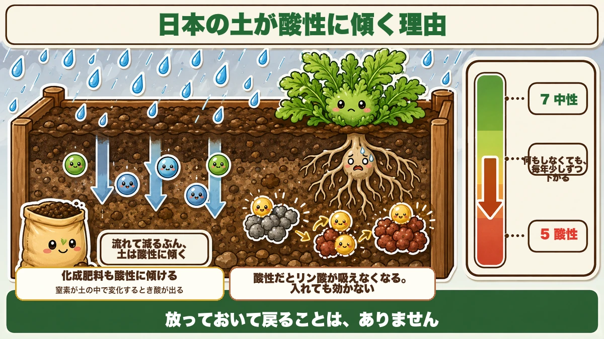
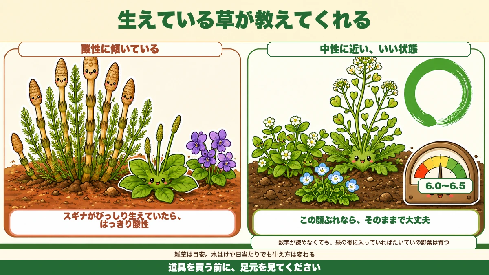

There are three kinds of lime 🧪 Only one of them lets you sow the same day

🧪 "You just scatter lime about, don't you?"
🧪 "I sowed the day after liming and nothing came up."
🧪 "I bought a pH meter but I don't know what to do with the number."
Hello, I'm Eiko. Eight years of growing vegetables organically and without pesticides, and a teaching licence in science.
Lime is unglamorous, but get it wrong and nothing else you do works.
The most important line first:
There are three kinds of lime, and the wait before you can sow is different for every one.
The commonest failure is sowing the day after using dolomite lime. I've watched that kill a sowing more than once.
Why soil drifts acid

What this diagram says （図解の文字）
- "What washes out, the soil turns acid by that much"
- "Compound fertiliser pushes it acid too — nitrogen releases acid as it changes in the soil"
- "When it's acid, phosphorus can't be taken up. You add it and it doesn't work"
- A scale from 7 neutral down to 5 acid: "it drops a little every year even if you do nothing"
- "It never comes back on its own."
The culprit is rain
Rain washes calcium and magnesium down through the soil. Those two are what hold soil towards the alkaline side, so as they leach away the soil drifts acid — every year, whether or not you do anything. It does not come back by itself.
Fertiliser pushes it the same way
Use compound fertiliser and the soil goes acid faster, because nitrogen releases acid as it transforms in the soil. The better you feed, the faster it drifts. "I look after it properly and it keeps doing worse" often turns out to be this.
Which is why lime isn't for everybody
Worth saying plainly: lime is not a material everyone must use.
If you use compound fertiliser, you need lime to put back what the acidification takes. Those two go together.
An organically fed garden is a different case. Rice bran, oil cake, kitchen compost — these contain calcium. Keep adding them and you end up somewhere close to a limed soil, and once the soil is good it stays good.
That's why I lime about every other year. "Every year" is the routine of a garden using compound fertiliser.
What acid soil actually costs you
Your fertiliser stops working. As soil turns acid, phosphorus binds to iron and aluminium into a form roots can't take up.
You're feeding, and it isn't arriving. Adding more doesn't fix it — only fixing the soil does.
The three kinds, and what each is for
What this diagram says （図解の文字）
- Dolomite lime — wait 2 weeks. Calcium + magnesium. "Magnesium sits at the centre of chlorophyll; short of it, the lower leaves yellow first"
- Organic lime (shell / oyster shell) ○ — wait 0 days. "You can sow the same day. It acts gently and doesn't damage roots. This is the one when the autumn schedule is tight"
- Slaked lime ✗ — not for home gardens
① Dolomite lime — two weeks
The one you'll see most. Calcium plus magnesium.
Magnesium is the atom at the centre of chlorophyll; short of it, the lower leaves yellow first. So dolomite corrects pH and feeds at the same time.
But it's slow to start. Spread it, mix it in well, and leave two weeks before planting.
② Organic lime (crushed shell) — sow the same day
Crushed oyster or other shell. This is the easiest to handle, for one reason: you can sow the day you spread it. It acts gently and won't damage roots.
Autumn schedules are tight. When you can't spare two weeks, use this. It costs more than dolomite, but you're buying the fortnight.
There's a quieter advantage too: iron, zinc, copper, molybdenum come with it — trace elements that don't appear on a fertiliser bag. And being shell, it gives soil life somewhere to live. You correct the pH and improve the soil at the same time. It's what I use most.
③ Slaked lime — don't use it at home
Strongly alkaline and the fastest acting. I wouldn't use it in a home garden. The powder is fine and blows about, and it's genuinely hazardous to eyes and skin. It's also strong enough that it's hard to judge the dose.
And one dangerous combination: slaked lime plus nitrogen fertiliser gives off ammonia gas. That damages plants — and your nitrogen leaves as gas. You're throwing fertiliser away.
This is where the types differ again: dolomite and organic lime react gently enough to go on with fertiliser. Only slaked lime must not.
Unless you have a big plot and proper protective kit, dolomite or organic lime covers everything.
How much
The basic rate
About 100–150 g per square metre (roughly 2–3 lb per 100 sq ft).
Spread it, then dig it in properly. Left on the surface it does nothing — lime barely dissolves in water, so it has to be in contact with soil to react.
You can measure it by hand
Carrying a measuring cup to the garden is a nuisance. Learn it by hand instead.
One handful is roughly 40–50 g. So: two handfuls per square metre. That's the one number to take away.
If you want to raise pH by 1.0
- Dolomite lime — 100 g/m²
- Slaked lime — 80–90 g/m² (the least)
- Organic lime — 130 g/m² (the most)
Take dolomite's 100 g as the middle and go 30 g either side. But soil type changes this a great deal — some gardens need twice as much. Don't try to hit it in one go: add, measure, and top up next time if it's short.
The ceiling is 300 g per square metre
One hard line: never exceed about 300 g/m² (6 lb per 100 sq ft), whichever type.
"A bit extra to be safe" is exactly wrong with lime. Here's why.
You don't need to lime every year
Too much lime can't be taken back out. Push it too alkaline and iron and manganese stop being available — the new leaves yellow. Zinc and boron go the same way. The nutrients are in the soil; they just won't dissolve.
And bringing soil back down is far harder than pushing it up.
I lime once every two years, when I rebuild the beds. Not as an annual habit.
There's a ratio in the soil
Going deeper: calcium, magnesium and potassium have a ratio at which they're best taken up — 5 : 2 : 1.
Liming raises only the first of those three. Push calcium up alone and the ratio breaks, and uptake of the others falls. The term for it is antagonism — they get in each other's way.
The commonest way this goes wrong
If you remember one thing from this article, this:
It's not growing → maybe it needs lime → add lime → it grows worse → add more.
That sequence stops a garden dead. A garden where no amount of fertiliser helps has usually had too much lime.
"I'm feeding it and it won't grow" is not a sign of too little fertiliser. It's a sign the ratio has broken.
If you use chicken manure, watch for doubling up
Easy to miss: chicken manure is roughly 20–30 % lime. So a garden getting chicken manure is already being limed. Add lime on top and you've done it twice.
If you use chicken manure, cut the lime back or skip it.
If you have overdone it
Not irreversible — just slow.
- Work in peat (around pH 4, so it reliably brings it down)
- Grow calcium-hungry crops and let them take it up — spinach, komatsuna, carrots
- Stop the chicken manure for a while
It won't come back in one season. Give it a year. Which is the argument for measuring before you add.
The exception: spinach
Spinach is the outlier — it wants pH 6.5–7, distinctly alkaline. Lime the spinach bed properly every year. Skimp there and it simply won't germinate.
The opposite exception: potatoes
Exactly the reverse. Don't lime the potato bed.
The reason is scab. Above about pH 6.5, that scabby skin disease takes off. Potatoes want pH 5.0–5.5 — clearly more acid than everything else.
- No lime on the potato bed
- No chicken manure either — it contains lime
- But below 5.0 growth and yield suffer, so it isn't "as acid as possible"
If you want calcium without raising pH, gypsum does that — it's neutral.
You can read the soil without a meter

What this diagram says （図解の文字）
- Drifting acid — "a thick stand of horsetail means clearly acid"
- ○ Close to neutral, a good state — pH 6.0–6.5 — "with these weeds, leave it alone"
- "Even if you can't read a number, most vegetables grow inside the green band"
- "Weeds are a guide only — drainage and sun change what grows"
Look at the weeds
- Horsetail, plantain, violets dominant → drifting acid
- Chickweed, speedwell, shepherd's purse dominant → close to neutral, a good state
A thick stand of horsetail in particular means clearly acid — it tolerates acid soil where other plants struggle.
And look for earthworms
Dig, and see whether there are worms. Soil that has gone too acid has no worms — it's become somewhere hard to live.
Soil that grows vegetables and soil that holds life are more or less the same soil. If worms come up on the spade, you're not in trouble.
It's a guide, not a measurement
Drainage and light change what grows too. If you want to know properly, a pH meter is worth owning. Even if the number means nothing to you, if the needle sits between 6.0 and 6.5 most vegetables will grow.
A pH meter can't read dry soil
This is why people stop trusting them
The usual reason a meter seems unreliable is that the soil is dry. A pH meter reads through the water in the soil. Push it into dry ground and the number is wrong.
How wrong? In the same spot I read 6.9 dry, and 6.4–6.5 after watering and waiting twenty minutes. Nearly 0.5 of difference — enough that "6.9, so no lime needed" would have been the wrong call.
Measuring it properly
- Water it — a bucketful — and wait twenty minutes. The instructions usually say "damp enough to form a ball"
- Measure at rooting depth. The surface alone isn't representative; pH tends to fall as you go deeper
- Don't judge from one spot. Take several, or mix soil from several places in a bucket
- With a new meter, rub the metal probe with fine sandpaper, then take two or three readings until it settles
And the most important thing: read the change, not the absolute number. Meters vary. Same meter, same method, and "lower than last year" is all you need.
One more: measure before you add compost or fertiliser. Correcting pH takes time, so finding out afterwards is too late.
🔬 The science: what pH actually counts
pH is a measure of how many hydrogen ions are in the water. Seven is the middle; lower is acid, higher is alkaline.
The interesting part: each step of 1 is a tenfold change in strength. pH 5 is not "a bit more acid" than pH 6 — it's ten times. From 7 to 5 is a hundredfold.
Which is why a small movement on the dial is a large movement in the soil, and why "a bit extra to be safe" goes wrong so fast.
To sum up
- ✅ Rain leaches calcium and magnesium — soil drifts acid on its own and never returns by itself
- ✅ Acid soil locks up phosphorus. You feed, and it doesn't arrive
- ✅ Lime isn't mandatory. An organically fed garden gets calcium from its inputs — every other year is enough
- ✅ Dolomite = wait 2 weeks. Organic (shell) = sow the same day. Slaked = not at home
- ✅ Only slaked lime must never go on with fertiliser (ammonia gas)
- ✅ Two handfuls per square metre; never more than 300 g/m²
- ✅ Ca : Mg : K want to be 5 : 2 : 1 — too much calcium blocks the rest (antagonism)
- ✅ "Feeding it and it won't grow" usually means too much lime, not too little fertiliser
- ✅ Chicken manure is 20–30 % lime — don't double up
- ✅ Spinach wants 6.5–7. Potatoes want 5.0–5.5 and no lime (scab)
- ✅ Horsetail = acid. Worms = healthy. A meter needs wet soil
You don't have to do all of it. Water a patch, wait twenty minutes, and take one reading. Knowing where you're starting from is the whole first step 🌱
Thank you for reading!